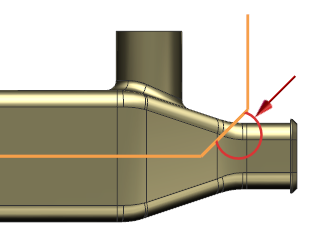
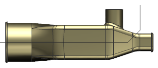
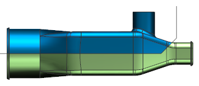
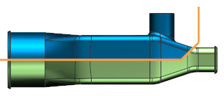
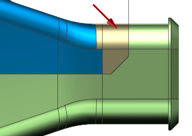

这两个部件将在注塑模中进行制造，在底部部件中，有些面会在模具的滑道处引起底切，您不需要更改修剪片体的形状来解决这个问题。您已经创建了从设计装配到顶部与底部部件的 WAVE 链接，只要在设计装配中编辑修剪片体，然后更改就会反映到各个组件中。

将涉及装配设为工作部件。

在部件导航器中，隐藏拉伸 (30)。
您应该能够通过颜色来区分夹具外壳的两半部分。

在部件导航器中，选择草图 (36) “Trim Sheet”。
该草图确定修剪片体的大小及形状。

在细节面板中，编辑下列表达式：
将表达式 p201的值修改为5
将表达式 p202的值修改为10
注意修剪片体不会再在模具中造成底切，当您在设计装配级别中进行更改时，顶部部件与底部部件也将发生变化。

|
注释 |
如果 WAVE 链接的体没有更新，请确保未选中工具→更新→部件间更新→延迟几何体、表达式和 PMI 选项。 |